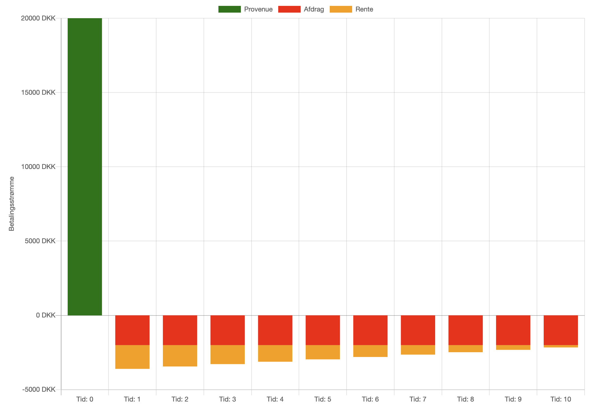
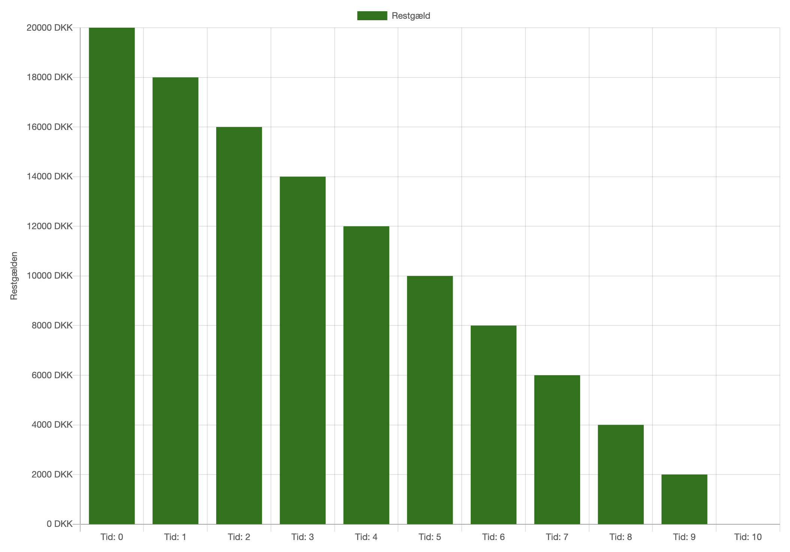
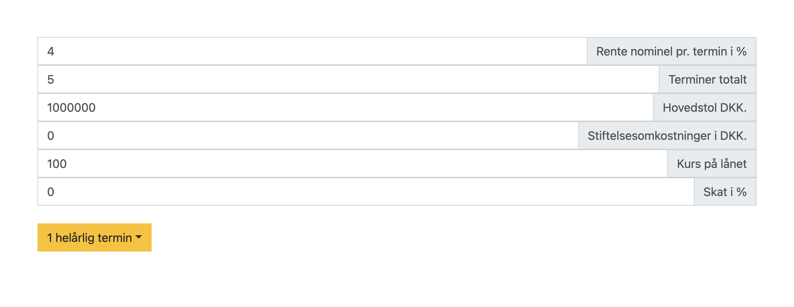
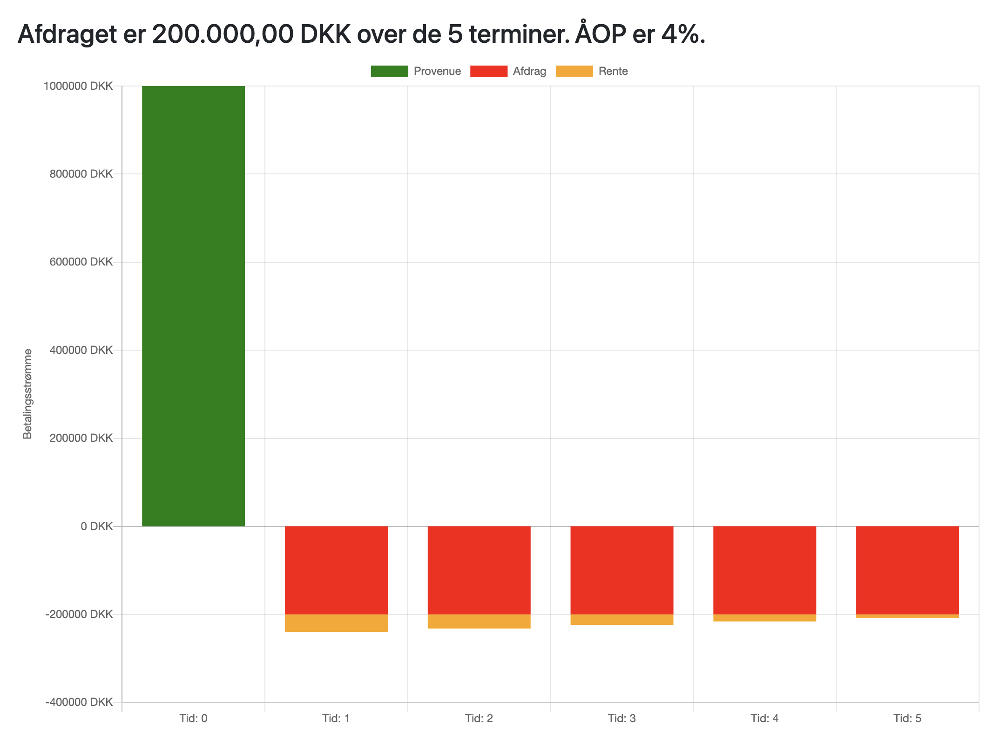
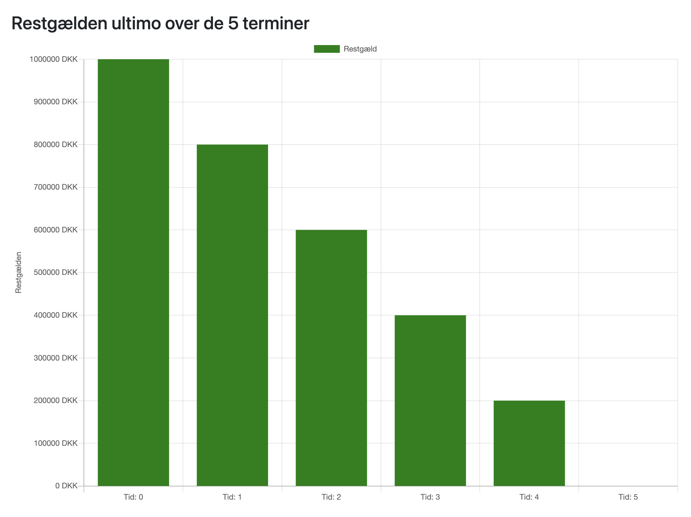
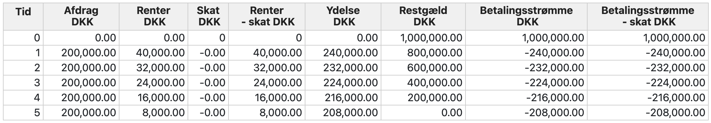

Serielån
Et serielån er en type lån, hvor låntager betaler et fast afdrag på hovedstolen ved hver termin. Dette betyder, at den samlede ydelse falder over tid, da rentebetalingen bliver mindre i takt med, at restgælden reduceres.
Kendetegn ved serielån:
- Fast afdrag ved hver termin
- Faldende ydelse over tid
- Hurtigere nedbringelse af gæld sammenlignet med annuitetslån
- Højere ydelser i starten af lånets løbetid
Låneprofiler
Herunder er profiler for de 3 lånetyper annuitets- serie- og stående lån.
Bemærk serielånet har
den mest agressive afdragsprofil, afdrag markeret med røde lige store stolper, sker tidligst i
forløbet.
Låntagers likviditet vil alt andet lige belastes mest af serielånet, da ydelserne er størst i
starten.
Alt andet lige vil långiver prissætte et serielån billigst pga. af den lavere risiko,
restgælden nedbringes hurtigst for denne lånetype.






Fordele og ulemper ved de 3 forskellige lånetyper
Serielån
- Fordele:
- Hurtigere nedbringelse af gæld
- Lavere samlede renteomkostninger over lånets løbetid
- Ulemper:
- Højere ydelser i starten af låneperioden
- Er likviditetsmæssigt tungere end de øvrige lånetyper
Annuitetslån
- Fordele:
- Fast ydelse gennem hele lånets løbetid
- Forudsigelighed i budgetplanlægning
- Ulemper:
- Langsom nedbringing af gæld i starten
- Højere samlede renteomkostninger end serielån
Stående lån
- Fordele:
- Lave løbende ydelser
- God til kortsigtede investeringer eller ved forventning om værdistigning
- Ulemper:
- Kræver stor likviditet ved lånets udløb
- Ingen løbende nedbringing af gæld
Valget mellem de forskellige lånetyper afhænger af låntagers økonomiske og likviditetsmæssige situation, forventninger til fremtiden og formålet med lånet.
App til Serielån
Du kan udregne låneforløbet i Excel eller i en app, herunder er link til App for serielån
App til serielånBeregninger for serielån
For et serielån er det relativt simpelt at beregne afdrag, ydelser og restgæld ved hver termin:
- Fast afdrag = Hovedstol / Antal terminer
- Rentesats pr. termin = Årlig rente / Antal terminer pr. år
- Restgæld = Oprindelig hovedstol - (Antal betalte terminer * Fast afdrag)
- Ydelse = Fast afdrag + (Restgæld * Rentesats pr. termin)
Eksempel: Serielån
| År | Fast Afdrag | Ydelse | Restgæld efter ydelse |
|---|---|---|---|
| 1 |
Hovedstol / Antal terminer 1.000.000/5 = 200.000 |
Fast afdrag + (Restgæld * Rentesats pr. termin) 200.000 + 1.000.000*4% = 240.000 |
Oprindelig hovedstol - (Antal betalte terminer * Fast afdrag) 1.000.000 - 1*200.000 = 800.000 kr. |
| 2 |
Hovedstol / Antal terminer 1.000.000/5 = 200.000 |
Fast afdrag + (Restgæld * Rentesats pr. termin) 200.000 + 800.000*4% = 232.000 |
Oprindelig hovedstol - (Antal betalte terminer * Fast afdrag) 1.000.000 - 2*200.000 = 600.000 kr. |
| 3 |
Hovedstol / Antal terminer 1.000.000/5 = 200.000 |
Fast afdrag + (Restgæld * Rentesats pr. termin) 200.000 + 600.000*4% = 224.000 |
Oprindelig hovedstol - (Antal betalte terminer * Fast afdrag) 1.000.000 - 3*200.000 = 400.000 kr. |
| 4 |
Hovedstol / Antal terminer 1.000.000/5 = 200.000 |
Fast afdrag + (Restgæld * Rentesats pr. termin) 200.000 + 400.000*4% = 216.000 |
Oprindelig hovedstol - (Antal betalte terminer * Fast afdrag) 1.000.000 - 4*200.000 = 200.000 kr. |
| 5 |
Hovedstol / Antal terminer 1.000.000/5 = 200.000 |
Fast afdrag + (Restgæld * Rentesats pr. termin) 200.000 + 200.000*4% = 208.000 |
Oprindelig hovedstol - (Antal betalte terminer * Fast afdrag) 1.000.000 - 5*200.000 = 0 kr. |
| Med app:     |
|||